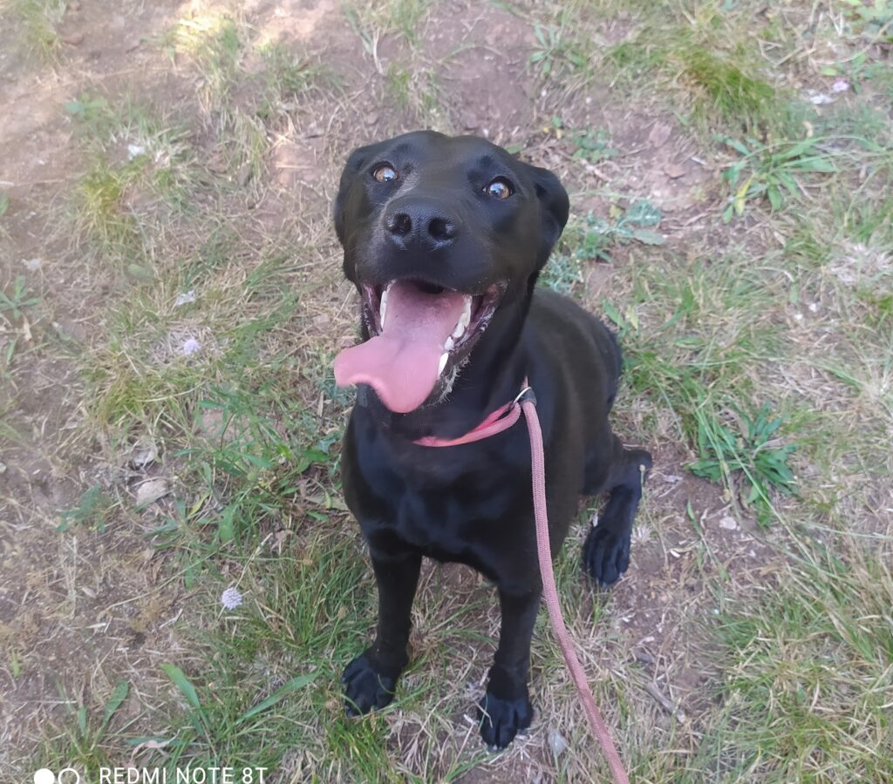

REFUGI ANIMAL


Barcelona
Raça: Mestís
Sexe: Femella
F.Naixement: 12.03.2023
Tamany: Mitjà
Bona tarda amics, Us presento a FISTRA, aquesta preciositat és una mestissa de Braco i Labrador, joveneta, d'uns dos anys i mig, mitjanita, que va trobar els seus ossos a la gossera a mitjans de Maig. Busquem una llar per a ella. Fistra és molt bona, afectuosa i podria viure amb altres gossets sense problema. Si us plau ajudar-me; a veure si entre tots aconseguim que canviï la seva sort i trobi una llar. Fistra es lliura degudament vacunada, esterilitzada i desparasitada. Actualment és a la protectora de Barcelona, però pot viatjar a qualsevol punt d'Espanya. Podeu contactar amb mi aquí per a qualsevol dubte: Juan Carlos Castaño 646 958 099 juancarcasta@gmail.com